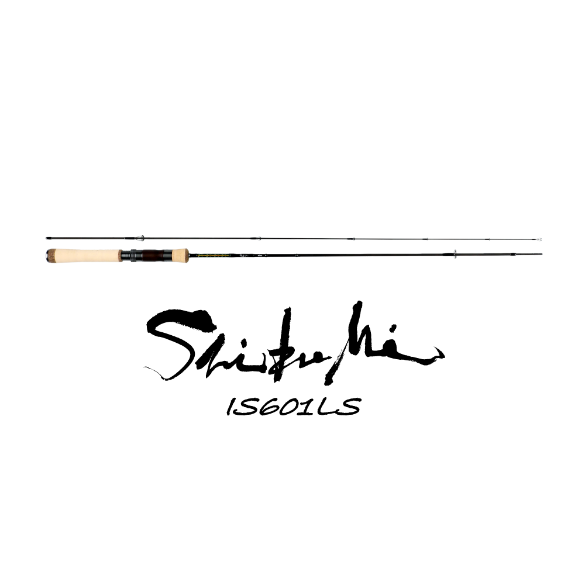
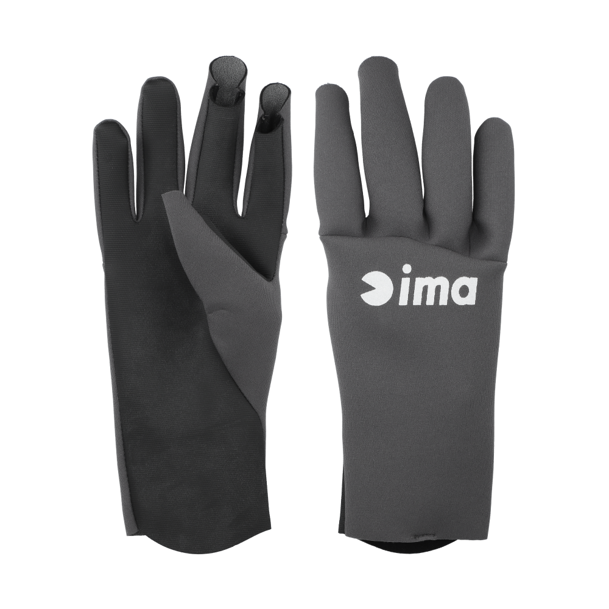
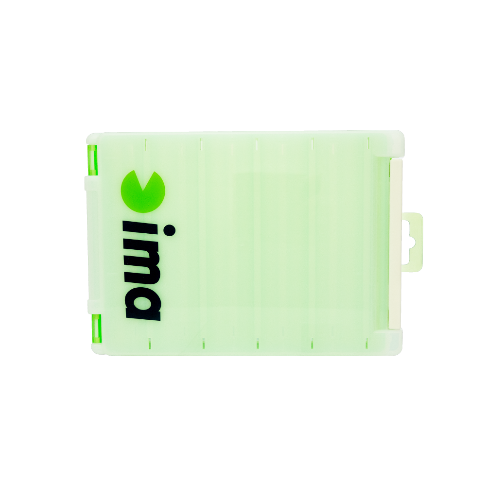

シブミ
（Shibumi）
シブミ（Shibumi）はima（アイマ）の渓流ロッドです。
日本を代表するプロアングラー・辺見哲也氏が、自身の代名詞でもある「フリップキャスト」に特化させた理想の渓流ロッドとして開発したセミダブルハンドモデル。アキュラシーと反発力を兼ね備えた調子設定に、無塗装・無コーティングのブランクとチタンフレームガイドを組み合わせた、軽量・高感度なメイドインジャパンのハイエンドロッドです。

画像出典:ima公式HP
スペック
- メーカー
- ima（アイマ）
- タイプ
- 渓流ロッド（スピニング・セミダブルハンド）
- モデル
- IS508LS／IS601LS
- 長さ
- 5'8"／6'1"
- 自重
- 83.3g／86.7g
- ガイド
- チタンフレーム
- 生産国
- 日本（メイドインジャパン）
- 価格
- 78,100〜79,200円（税込）
- 販売
- ima公式オンラインストア限定
▼今すぐチェック
シブミの特徴
フリップキャストの精度を上げるために作られた、軽量・高感度の渓流ロッド
-
フリップキャストに特化した調子設定
辺見哲也氏の代名詞「フリップキャスト」に特化し、アキュラシー（精度）と反発力を兼ね備えた絶妙なバランスの調子に設定。狙ったスポットへ正確にルアーを送り込める。
-
無塗装・無コーティングのブランク
ブランクは塗装もコーティングもしない無垢仕上げ。余計な重さを省き、軽さと感度を追求している。
-
チタンフレームのガイド
軽量なチタンフレームのガイドを採用し、ブランクの軽さと合わせて高感度に仕上げている。
シブミの選び方
川幅や使うルアーの重さでモデルを選ぶのが基本です。
枝沢など川幅の狭い渓流や、軽いルアーを使うことが多いならIS508LS（ルアーMAX 6g）。本流や川幅の広い渓流までカバーしたいならIS601LS（ルアーMAX 8g）がオススメです。
シブミのが向いている釣り
渓流のミノーイングで、キャスト精度を上げたい人に向いたロッドです。
フリップキャストで狙ったピンへ正確にルアーを送り込みたい人や、軽さと感度にこだわりたい人にオススメ。ima公式オンラインストア限定販売です。
ワンポイント
リールフットのサイズによってはリールが適合しない場合があると公式に注意書きがあります。手持ちのリールを使う場合は、購入前に確認しておきましょう。
グリップ長は両モデルとも27.5cm。セミダブルハンドなので、両手を使ったフリップキャストで精度を出しやすい設計です。
シブミのモデル
| モデル | 長さ／自重 | ルアー重量／ライン |
|---|---|---|
| IS508LS | 5'8"／83.3g | ルアーMAX 6g／PE MAX 0.8号 |
| IS601LS | 6'1"／86.7g | ルアーMAX 8g／PE MAX 0.8号 |
IS508LSは枝沢など川幅の狭い渓流や軽いルアーの使用時に、IS601LSは本流や川幅の広い渓流までをカバーするモデルです。
ラインナップ
シブミの2モデルを紹介します。
枝沢など川幅の狭い渓流や、軽いルアーの使用時に力を発揮するモデル。

IS601LS本流や川幅の広い渓流までカバーする、頼もしい1本。
画像出典:ima公式HP
シブミとあわせてチェックしたいアイテム
-
 カワバンガ（COWABUNGA!!）
ima
詳細はこちら＞
カワバンガ（COWABUNGA!!）
ima
詳細はこちら＞
imaのメイドインジャパンのシーバスロッド。“「曲がる」王道ロッド”としてシーバスゲームで使いたい人に。
-

タイタニュームフィットグローブ ima 詳細はこちら＞imaの防寒フィッシンググローブ。冷え込む季節の渓流や海で手を守りたいときに。
-

ルアーケース リバーシブル140 ima 詳細はこちら＞imaの両面収納ルアーケース。ルアーを1本ずつ分けて収納でき、フック同士が絡みにくい。